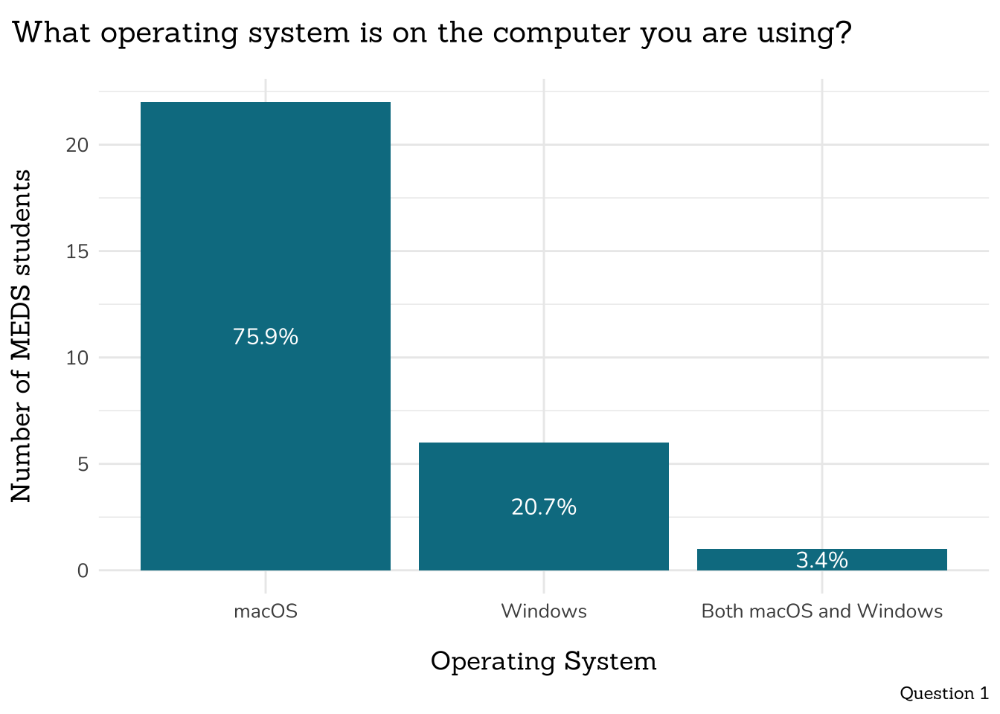
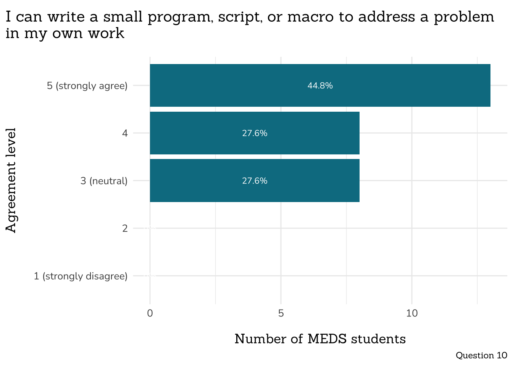
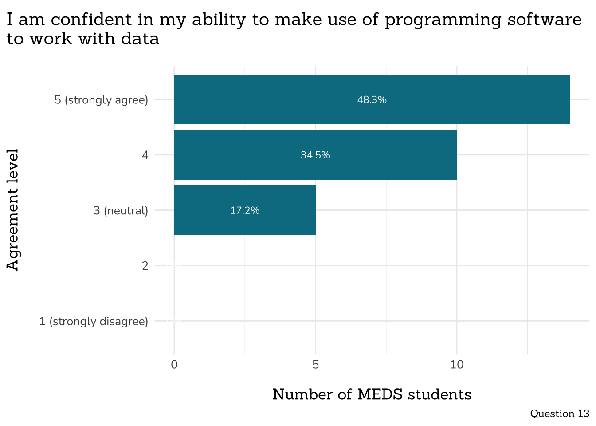
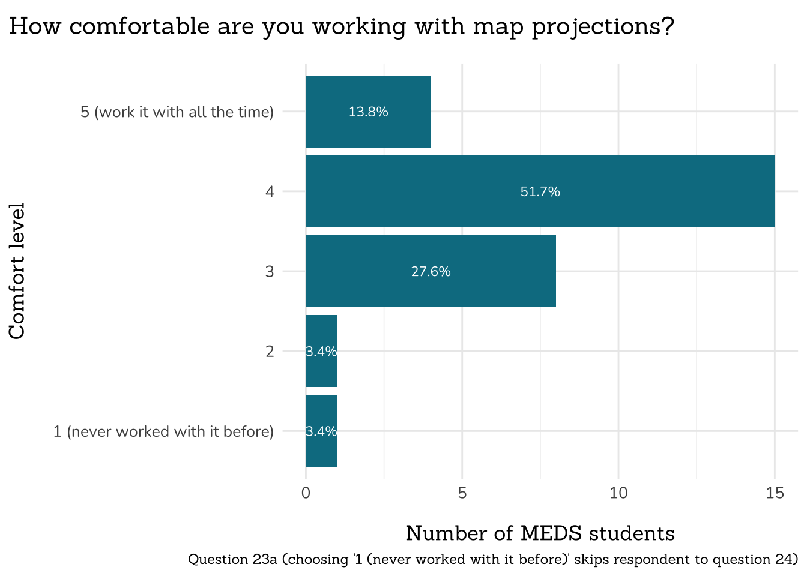
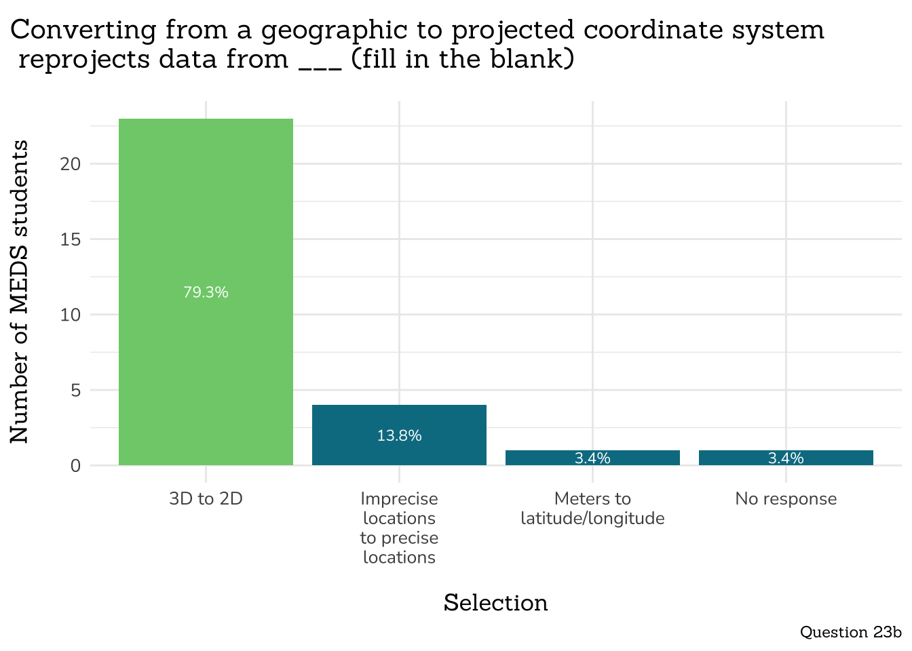
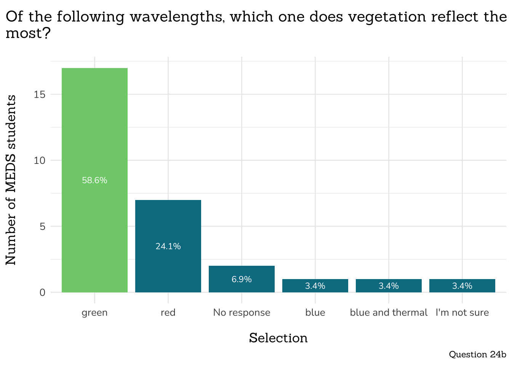
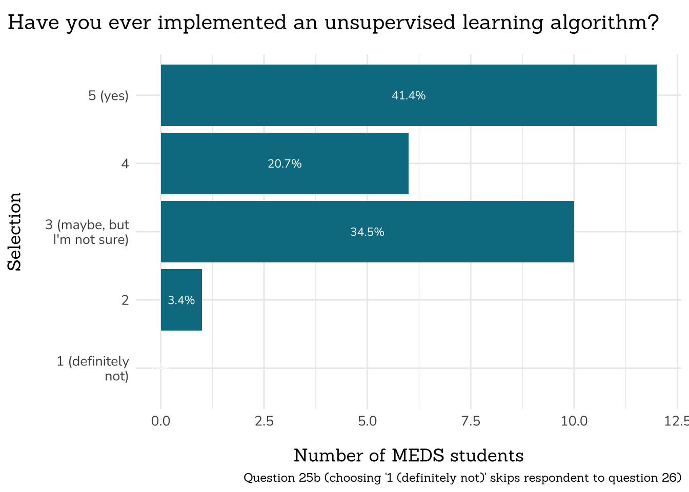
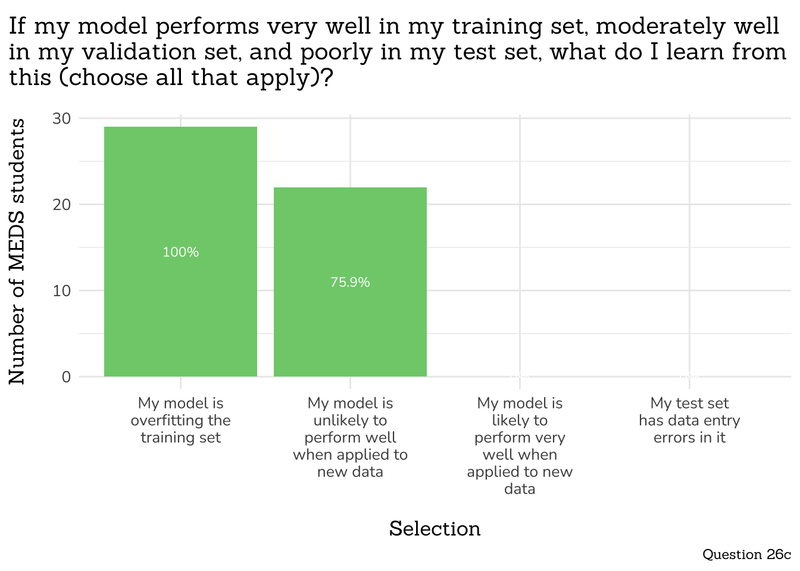
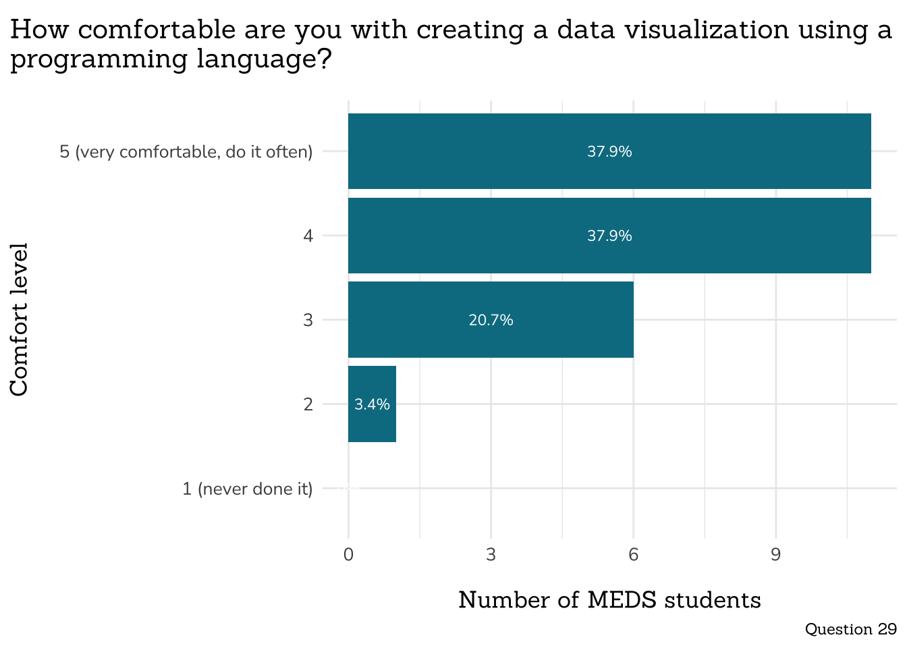
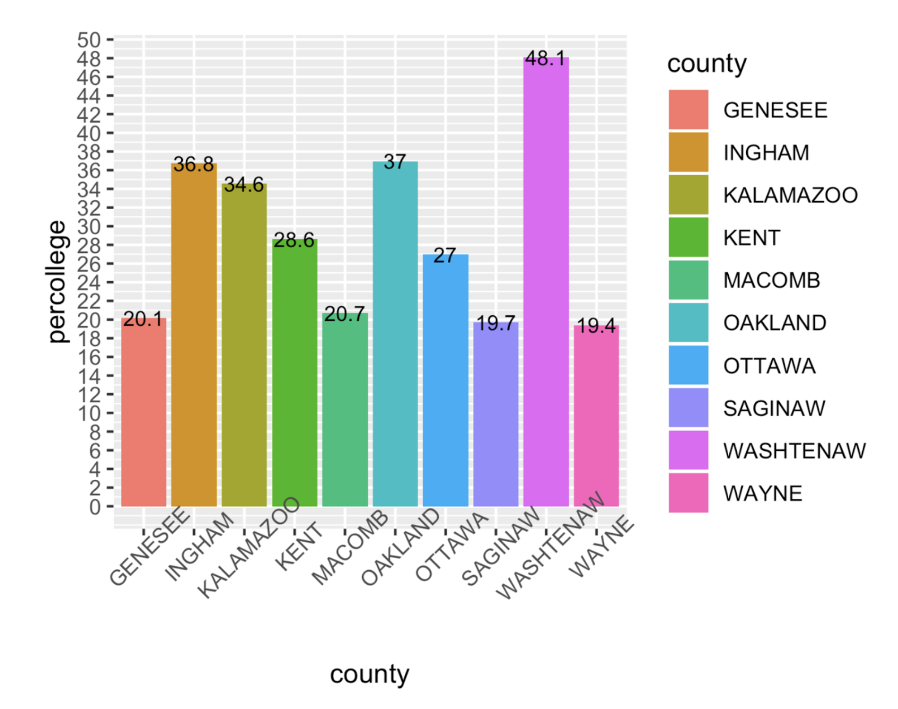

Program Learning Outcome (PLO) #1 Assessment - Core Knowledge
Author
Sam Csik
Published
June 9, 2023
Background
Expand this drop-down for background information on the PLO Assessment process
Who is this survey for?
All students enrolled in the Master of Environmental Data Science (MEDS) program during the 2023 - 2025 academic years will receive this survey to complete just before beginning the program and just after completing the program.
What is a PLO and where can I find the MEDS PLO?
Each degree-granting program at UCSB has its own list of educational aims: the conceptual knowledge, practical skills, experiences, perspective-awareness, and/or values that students will be familiar with by the time they complete the program. These Program Learning Outcomes (PLOs) are defined by department faculty and approved by the Council on Assessment and the Academic Senate’s Graduate Council. Find the approved PLO for the Master of Environmental Data Science program.
How are PLOs assessed?
Departments self-assess their PLO performance on a three-year cycle. A single educational aim is assessed in a cycle.
What does that mean for the MEDS program?
Bren has entered its assessment cycle, which will last from 2023 - 2025. During this 3-year span, MEDS PLO 1 (Core Knowledge) will be assessed by delivering a pre- and post-program survey to MEDS students in the form of a Qualtrics survey. This survey is not a test of individual students, but rather an assessment of the MEDS program.
Summary
This post-program PLO assessment was administered to the MEDS class of 2023 (response rate = 29 / 31 students) on June 7, 2023.
Heads-up! No pre-program PLO assessment data for the Class of 2023
This assessment of MEDS PLO #1 (Core Knowledge) was developed by the MEDS Curriculum Cohesion Committee in winter/spring 2023, and therefore was not administered to the MEDS Class of 2023 before beginning the program in August 2022 (i.e. no pre-program assessment was conducted). No benchmark data is available for the Class of 2023.
The survey consists of 31 questions (28 multiple choice, 3 short free-response) and takes ~30 minutes to complete. Questions 1 - 15 ask respondents to rank how often they use certain data science tools or workflows, or familiarity/comfort levels with particular topics (see Part 1 through Part 4, below). Questions 16 - 31 assess respondents’ familiarity and application of domain-specific knowledge/tools taught during the MEDS program (see Part 5 onward, below). Many of these question types are multi-part and begin with a question phrased as:
“How familiar/comfortable are you with X” (rank 1 (never heard of it) > 5 (very familiar))
“Have often have you done/implemented Y” (rank 1 (never) > 5 (all the time))
If a respondent chooses a level of 2 or greater, they proceed to the remaining part(s) of the question to be tested on their knowledge/understanding of that topic. If a respondent chooses a level 1, they are skipped to the next question (to prevent respondents from guessing at answers). A perfect score is 14 points. See the distribution of scores, below:
Individual Questions
Note
Questions that have a correct answer are color-coded green.
Part 1: OS and data/document storage

NOTE: Percentages will not sum to 100%
Part 2: How often do you currently use the following?
Part 3: Workflow satisfaction
Part 4: Rank the following from 1 (strongly disagree) to 5 (strongly agree)


Part 5: Stats
All students answered all parts of question 17
29 / 29 student respondents (100%) chose a familiarity level of 2 or greater, and therefore were directed to answer all parts of question 17.
Below is a chunk of code showing a simple linear regression relating the number of pieces of microplastics to the number of days per year with rainfall.
Question 17b raw responses
Some respondents recorded their answers in sentence form, while others did not round their answers to the nearest integer. Cleaned responses are shown in the plot, above. Responses as they were recorded are included in the table, below:
All students answered all parts of question 18
29 / 29 student respondents (100%) chose a familiarity level of 2 or greater, and therefore were directed to answer all parts of question 18.
62% of respondents correctly answered question 18b (i.e. chose exactly the following options: noraml, uniform, bimodal, symmedtric)
Part 6: Programming 1
All students advanced to answer question 19b
29 / 29 student respondents (100%) chose a familiarity level of 2 or greater, and therefore were directed to answer part b of question 19.
All students answered all parts of question 19
29 / 29 student respondents (100%) chose a comfort level of 2 or greater, and therefore were directed to part c of question 19.
29 / 29 student respondents (100%) chose a familiarity level of 2 or greater, and therefore were directed to answer all parts of question 21.
100% of respondents correctly answered question 21b (i.e. chose exactly the following options: raster, vector)
UPDATE FOR NEXT YEAR
This question was missing from assessment: How familiar are you with the term remote sensing? 1 (never hear of it), 2, 3 (vague sense of what it means), 4, 5 (very familiar)
All students answered all parts of question 22
29 / 29 student respondents (100%) chose a familiarity level of 2 or greater, and therefore were directed to answer all parts of question 22.


28 / 29 respondents advanced to Question 23b
28 / 29 student respondents (96.5517241%) chose a familiarity level of 2 or greater – these respondents were directed to answer Question 23b. One respondent selected 1 (never worked with it before) in response to Question 23a and was jumped directly to Question 24.
UPDATE FOR NEXT YEAR
Add “I’m not sure” option

27 / 29 respondents advanced to Question 24b
27 / 29 student respondents (93.1034483%) chose a familiarity level of 2 or greater – these respondents were directed to answer Question 24b. Two respondents selected 1 (never heard of it) in response to Question 24a and were jumped directly to Question 25.
Part 9: Machine Learning

All respondents advanced to Question 25b
29 / 29 student respondents (100%) chose a familiarity level of 2 or greater, and therefore were directed to Question 25b.
All respondents advanced to Question 25c
29 / 29 student respondents (100%) chose a familiarity level of 2 or greater, and therefore were directed to Question 25c.
All respondents advanced to Question 26b
29 / 29 student respondents (100%) chose a familiarity level of 2 or greater, and therefore were directed to Question 26b.
All respondents advanced to Question 26c
29 / 29 student respondents (100%) chose a familiarity level of 2 or greater, and therefore were directed to Question 26c.

75.9% of respondents correctly answered question 26c (i.e. chose exactly the following options: My model is likely to perform very well when applied to new data, My test set has data entry errors in it)
Part 10: Environmental Justice

Part 11: Data Viz & Communication
Identify 4 areas for improvement in the following data visualization that shows information about Michigan counties with highest college attendance.

Wordcloud of most frequently occurring words used to describe suggested improvements to the above data visualization (Question 30)
Question 30 raw responses
Free responses as they were recorded are included in the table, below:
---title: "Master of Environmental Data Science (MEDS)"subtitle: "Program Learning Outcome (PLO) #1 Assessment - Core Knowledge"author: "Sam Csik"date: June 9, 2023format: html: toc: true toc-location: left code-tools: source: true toggle: false theme: - styles.scss mainfont: Nunitoexecute: eval: true echo: false message: false warning: falseeditor_options: chunk_output_type: console---# **Background**::: {.callout-note collapse=true}## Expand this drop-down for background information on the PLO Assessment process### Who is this survey for?All students enrolled in the Master of Environmental Data Science (MEDS) program during the 2023 - 2025 academic years will receive this survey to complete just before beginning the program and just after completing the program.### What is a PLO and where can I find the MEDS PLO?Each degree-granting program at UCSB has its own list of educational aims: the conceptual knowledge, practical skills, experiences, perspective-awareness, and/or values that students will be familiar with by the time they complete the program. These [Program Learning Outcomes](https://www.assessment.ucsb.edu/learning-outcomes) (PLOs) are defined by department faculty and approved by the Council on Assessment and the Academic Senate's Graduate Council. Find the [approved PLO](https://www.assessment.ucsb.edu/sites/default/files/sitefiles/Environmental%20Data%20Science%20%28MEDS%29_2022updated_0.pdf) for the Master of Environmental Data Science program.### How are PLOs assessed?Departments self-assess their PLO performance on a three-year cycle. A single educational aim is assessed in a cycle.### What does that mean for the MEDS program?Bren has entered its assessment cycle, which will last from 2023 - 2025. During this 3-year span, MEDS PLO 1 (Core Knowledge) will be assessed by delivering a pre- and post-program survey to MEDS students in the form of a Qualtrics survey. This survey is not a test of individual students, but rather an assessment of the MEDS program.:::# **Summary**```{r}#..........................load packages.........................library(googlesheets4)library(tidyverse)library(janitor)library(showtext)library(ggtext)library(DT)library(tidytext)library(wordcloud)#..........................import data...........................medsJune2023 <-read_sheet("https://docs.google.com/spreadsheets/d/1Sq1rOmBP-g6iOCBS7NoexCj4K-j3OpeErMJ2Hxd3AHo/edit?usp=sharing")#...........................clean data...........................medsJune2023_clean <- medsJune2023 |>filter(!row_number() %in%c(1, 2)) |>clean_names() |># coerce data types ----mutate(#start_date = as_datetime(start_date, origin = "1981-01-01"),#start_date = as_datetime(start_date)progress =as.numeric(progress),duration_in_seconds =as.numeric(duration_in_seconds),finished =as.character(finished),operating_system =as_factor(operating_system),raw_data =as.character(raw_data),small_program =as.character(small_program),find_help_online =as.character(find_help_online),overcoming_problems =as.character(overcoming_problems),confident_programmer =as.character(confident_programmer),easier_analyses =as.character(easier_analyses),increase_efficiency =as.character(increase_efficiency),median =as.numeric(median),mode =as.numeric(mode),linear_regression =as.character(linear_regression),microplastics_lr =as.character(microplastics_lr),prob_dist =as.character(prob_dist),term_function =as.character(term_function),writing_functions =as.character(writing_functions),fxn_output =as.character(fxn_output),spatial_data =as.character(spatial_data),remote_sense_comfort =as.character(remote_sense_comfort),map_proj_comfort =as.character(map_proj_comfort), reflec_spec =as.character(reflec_spec),sup_vs_unsup_learn =as.character(sup_vs_unsup_learn),implemented_algo =as.character(implemented_algo),ml_div_data =as.character(ml_div_data),train_valid_split =as.character(train_valid_split),data_justice =as.character(data_justice),bias =as.character(bias),data_viz_programming =as.character(data_viz_programming),sc0 =as.numeric(sc0)) #......................import Google fonts.......................sysfonts::font_add_google(name ="Sanchez", family ="sanchez")sysfonts::font_add_google(name ="Nunito", family ="nunito")# automatically use showtext to render text for future devices ----showtext::showtext_auto()#......................create ggplot theme.......................meds_theme <-theme_minimal() +theme(axis.title.x =element_text(margin =margin(t =15, r =0, b =0, l =0), family ="sanchez", size =13),axis.title.y =element_text(margin =margin(t =0, r =15, b =0, l =0), family ="sanchez", size =13), axis.text =element_text(family ="nunito", size =10),plot.title =element_text(margin =margin(t =5, r =0, b =15, l =0), size =15, family ="sanchez"),plot.subtitle =element_text(margin =margin(t =5, r =0, b =15, l =0), size =13, family ="sanchez"),plot.caption =element_text(family ="sanchez"),plot.title.position ="plot",legend.position ="none" )#........................source functions........................# source("functions.R")```This post-program PLO assessment was administered to the MEDS class of 2023 **(response rate = `r nrow(medsJune2023_clean)` / 31 students)** on June 7, 2023.::: {.callout-warning}## Heads-up! No pre-program PLO assessment data for the Class of 2023This assessment of MEDS PLO #1 (Core Knowledge) was developed by the MEDS Curriculum Cohesion Committee in winter/spring 2023, and therefore *was not* administered to the MEDS Class of 2023 before beginning the program in August 2022 (i.e. no pre-program assessment was conducted). No benchmark data is available for the Class of 2023. :::The survey consists of **31 questions (28 multiple choice, 3 short free-response)** and takes ~30 minutes to complete. Questions 1 - 15 ask respondents to rank how often they use certain data science tools or workflows, or familiarity/comfort levels with particular topics (see [Part 1](#part-1-os-and-datadocument-storage) through [Part 4](#part-4-rank-the-following-from-1-strongly-disagree-to-5-strongly-agree), below). Questions 16 - 31 assess respondents' familiarity and application of domain-specific knowledge/tools taught during the MEDS program (see [Part 5](#part-5-stats) onward, below). Many of these question types are multi-part and begin with a question phrased as:- "How familiar/comfortable are you with X" (rank 1 (never heard of it) > 5 (very familiar))- "Have often have you done/implemented Y" (rank 1 (never) > 5 (all the time))If a respondent chooses a level of 2 or greater, they proceed to the remaining part(s) of the question to be tested on their knowledge/understanding of that topic. If a respondent chooses a level 1, they are skipped to the next question (to prevent respondents from guessing at answers). A perfect score is 14 points. See the distribution of scores, below: ```{r}#| fig-align: centerscores <- medsJune2023_clean |>select(sc0)mean_score <-mean(scores$sc0)median_score <-median(scores$sc0)ggplot(scores, aes(x = sc0)) +geom_histogram(binwidth =1, color ="white", fill ="#047C91") +geom_vline(xintercept = median_score, linetype ="dashed", color ="black") +annotate(geom ="label", x =10.5, y =8, label =paste0("Median Score = ", median_score), hjust ="right") +annotate(geom ="segment", x =10.5, y =8, xend = median_score, yend =7.5,arrow =arrow(length =unit(3, "mm"))) +scale_x_continuous(breaks =seq(1, 14, 1)) +labs(x ="Score", y ="Number of MEDS studnets",title ="Distribution of scores",caption ="Out of 14 available points") + meds_theme```# **Individual Questions**::: {.callout-note}Questions that have a correct answer are color-coded green.:::## **Part 1: OS and data/document storage**```{r}#............................wrangle.............................q1_os <- medsJune2023_clean |># select necessary cols ----select(operating_system, operating_system_4_text) |># if "Other", replace with written-in response ----mutate(os =case_when( operating_system =="Other"~ operating_system_4_text,TRUE~ operating_system )) |># remove unnecessary cols ----select(os) |># count ----group_by(os) |>count() |>ungroup() |># add col for percentages ----mutate(percentage =round((n/(sum(n)))*100, 1),perc_label =paste0(percentage, "%"))#..............................plot..............................ggplot(q1_os, aes(x =fct_reorder(os, desc(n)), y = n, label = perc_label)) +geom_col(fill ="#047C91") +geom_text(position =position_stack(vjust =0.5), size =4, color ="white", family ="nunito") +labs(x ="Operating System", y ="Number of MEDS students",title ="What operating system is on the computer you are using?",caption ="Question 1") + meds_theme``````{r}#| fig-cap: "NOTE: Percentages will not sum to 100%"# combine written-in "server" option ----server <-c("Server", "Taylor server", "external server")#............................wrangle.............................q2_store_data <- medsJune2023_clean |># select necessary cols ----select(where_store_data, where_store_data_6_text) |># split strings by `,` delim ----separate_longer_delim(where_store_data, delim =",") |># if "Other", replace with written-in response ----mutate(store_data_new =case_when( where_store_data =="Other"~ where_store_data_6_text,TRUE~ where_store_data )) |># remove unnecessary cols ----select(where_store_data = store_data_new) |># combine similar "other" choices ----mutate(where_store_data =case_when( where_store_data %in% server ~"Server",TRUE~ where_store_data )) |># change "Locally on my computer" to "Locally" ----mutate(across('where_store_data', str_replace, 'Locally on my computer', 'Locally')) |># count ----group_by(where_store_data) |>count() |>ungroup() |># add col for percentages ----mutate(percentage =round((n/(sum(n)))*100, 1),perc_label =paste0(percentage, "%"))#..............................plot..............................ggplot(q2_store_data, aes(x =fct_reorder(where_store_data, desc(n)), y = n, label = perc_label)) +geom_col(fill ="#047C91") +geom_text(position =position_stack(vjust =0.5), size =4, color ="white", family ="nunito") +labs(x ="Data Storage Location", y ="Number of MEDS students",title ="Where do you store data and/or documents (select all that apply)",caption ="Question 2") + meds_theme```## **Part 2: How often do you currently use the following?**```{r}#............................wrangle.............................q3_gui <- medsJune2023_clean |># select necessary cols ----select(point_and_click_gui) |># sum ----group_by(point_and_click_gui) |>count() |>ungroup() |># ONLY ADDING BC NO ONE SELECTED 'Daily' ----add_row(point_and_click_gui ="Daily", n =0) |># reorder factors ----mutate(point_and_click_gui =fct_relevel(point_and_click_gui,c("Never", "Less than once per year", "Several times per year","Monthly", "Weekly", "Daily"))) |># add col for percentages ----mutate(percentage =round((n/(sum(n)))*100, 1),perc_label =paste0(percentage, "%"))#..............................plot..............................ggplot(q3_gui, aes(x = point_and_click_gui, y = n, label = perc_label)) +geom_col(fill ="#047C91") +coord_flip() +geom_text(position =position_stack(vjust =0.5), size =4, color ="white", family ="nunito") +labs(y ="Number of MEDS students", x ="Frequency of use",title ="A specialized software with a point-and-click graphical user\ninterface (e.g., for statistical analysis: SPSS, SAS...;for Geospatial\nanalysis: ArcGIS, QGIS...; for Genomics analysis: Geneious, …)",caption ="Question 3") + meds_theme``````{r}#............................wrangle.............................q4_prog_lang <- medsJune2023_clean |># select necessary cols ----select(program_lang) |># sum ----group_by(program_lang) |>count() |>ungroup() |># ONLY ADDING BC NO ONE SELECTED THE FOLLOWING OPTIONS ----add_row(program_lang ="Monthly", n =0) |>add_row(program_lang ="Several times per year", n =0) |>add_row(program_lang ="Less than once per year", n =0) |>add_row(program_lang ="Never", n =0) |># reorder factors ----mutate(program_lang =fct_relevel(program_lang, c("Never", "Less than once per year", "Several times per year","Monthly", "Weekly", "Daily"))) |># add col for percentages ----mutate(percentage =round((n/(sum(n)))*100, 1),perc_label =paste0(percentage, "%"))#..............................plot..............................ggplot(q4_prog_lang, aes(x = program_lang, y = n, label = perc_label)) +geom_col(fill ="#047C91") +coord_flip() +geom_text(position =position_stack(vjust =0.5), size =4, color ="white", family ="nunito") +labs(y ="Number of MEDS students", x ="Frequency of use",title ="Programming languages (R, Python, etc.)",caption ="Question 4") + meds_theme``````{r}#............................wrangle.............................q5_databases <- medsJune2023_clean |># select necessary cols ----select(databases) |># sum ----group_by(databases) |>count() |>ungroup() |># reorder factors ----mutate(databases =fct_relevel(databases, c("Never", "Less than once per year", "Several times per year","Monthly", "Weekly", "Daily"))) |># add col for percentages ----mutate(percentage =round((n/(sum(n)))*100, 1),perc_label =paste0(percentage, "%"))#..............................plot..............................ggplot(q5_databases, aes(x = databases, y = n, label = perc_label)) +geom_col(fill ="#047C91") +coord_flip() +geom_text(position =position_stack(vjust =0.5), size =4, color ="white", family ="nunito") +labs(y ="Number of MEDS students", x ="Frequency of use",title ="Databases (SQL, Access, etc.)",caption ="Question 5") + meds_theme``````{r}#............................wrangle.............................q6_version_control <- medsJune2023_clean |># select necessary cols ----select(version_control) |># sum ----group_by(version_control) |>count() |>ungroup() |># ONLY ADDING BC NO ONE SELECTED THE FOLLOWING OPTIONS ----add_row(version_control ="Monthly", n =0) |>add_row(version_control ="Several times per year", n =0) |>add_row(version_control ="Less than once per year", n =0) |>add_row(version_control ="Never", n =0) |># reorder factors ----mutate(version_control =fct_relevel(version_control, c("Never", "Less than once per year", "Several times per year","Monthly", "Weekly", "Daily"))) |># add col for percentages ----mutate(percentage =round((n/(sum(n)))*100, 1),perc_label =paste0(percentage, "%"))#..............................plot..............................ggplot(q6_version_control, aes(x = version_control, y = n, label = perc_label)) +geom_col(fill ="#047C91") +coord_flip() +geom_text(position =position_stack(vjust =0.5), size =4, color ="white", family ="nunito") +labs(y ="Number of MEDS students", x ="Frequency of use",title ="Version control software (Git, Subversion (SVN), Mercurial, etc.)",caption ="Question 6") + meds_theme``````{r}#............................wrangle.............................q7_command_shell <- medsJune2023_clean |># select necessary cols ----select(command_shell) |># sum ----group_by(command_shell) |>count() |>ungroup() |># ONLY ADDING BC NO ONE SELECTED THE FOLLOWING OPTIONS ----add_row(command_shell ="Less than once per year", n =0) |>add_row(command_shell ="Never", n =0) |># reorder factors ----mutate(command_shell =fct_relevel(command_shell, c("Never", "Less than once per year", "Several times per year","Monthly", "Weekly", "Daily"))) |># add col for percentages ----mutate(percentage =round((n/(sum(n)))*100, 1),perc_label =paste0(percentage, "%"))#..............................plot..............................ggplot(q7_command_shell, aes(x = command_shell, y = n, label = perc_label)) +geom_col(fill ="#047C91") +coord_flip() +geom_text(position =position_stack(vjust =0.5), size =4, color ="white", family ="nunito") +labs(y ="Number of MEDS students", x ="Frequency of use",title ="A command shell (usually accessed through Terminal on macOS or\nPowerShell on Windows)",caption ="Question 7") + meds_theme```## **Part 3: Workflow satisfaction**```{r}#............................wrangle.............................q8_satisfaction <- medsJune2023_clean |># select necessary cols ----select(rate_satisfaction) |># sum ----group_by(rate_satisfaction) |>count() |>ungroup() |># ONLY ADDING BC NO ONE SELECTED THE FOLLOWING OPTIONS ----add_row(rate_satisfaction ="Very unsatisfied", n =0) |>add_row(rate_satisfaction ="Not sure", n =0) |>add_row(rate_satisfaction ="Never thought about this", n =0) |>add_row(rate_satisfaction ="Not applicable", n =0) |># reorder factors ----mutate(rate_satisfaction =fct_relevel(rate_satisfaction, c("Not applicable", "Never thought about this", "Not sure","Very unsatisfied", "Unsatisfied", "Neutral","Satisfied", "Very Satisfied"))) |># add col for percentages ----mutate(percentage =round((n/(sum(n)))*100, 1),perc_label =paste0(percentage, "%"))#..............................plot..............................ggplot(q8_satisfaction, aes(x = rate_satisfaction, y = n, label = perc_label)) +geom_col(fill ="#047C91") +coord_flip() +geom_text(position =position_stack(vjust =0.5), size =3, color ="white", family ="nunito") +labs(y ="Number of MEDS students", x ="Satisfaction level",title ="Please rate your level of satisfaction with your current data\nmanagement and analysis workflow (i.e. how you collect, organize,\nstore, and analyze your data).",caption ="Question 8") + meds_theme```## **Part 4: Rank the following from 1 (strongly disagree) to 5 (strongly agree)**```{r}#............................wrangle.............................q9_raw_data <- medsJune2023_clean |># select necessary cols ----select(raw_data) |># sum ----group_by(raw_data) |>count() |>ungroup() |># ONLY ADDING BC NO ONE SELECTED THE FOLLOWING OPTIONS ----add_row(raw_data ="3 (neutral)", n =0) |>add_row(raw_data ="2", n =0) |>add_row(raw_data ="1 (strongly disagree)", n =0) |># reorder factors ----mutate(raw_data =fct_relevel(raw_data, c("1 (strongly disagree)", "2", "3 (neutral)", "4", "5 (strongly agree)"))) |># add col for percentages ----mutate(percentage =round((n/(sum(n)))*100, 1),perc_label =paste0(percentage, "%"))#..............................plot..............................ggplot(q9_raw_data, aes(x = raw_data, y = n, label = perc_label)) +geom_col(fill ="#047C91") +coord_flip() +geom_text(position =position_stack(vjust =0.5), size =3, color ="white", family ="nunito") +labs(y ="Number of MEDS students", x ="Agreement level",title ="Having access to the original, raw data is important to be able to\nrepeat an analysis",caption ="Question 9") + meds_theme``````{r}#............................wrangle.............................q10_small_program <- medsJune2023_clean |># select necessary cols ----select(small_program) |># sum ----group_by(small_program) |>count() |>ungroup() |># ONLY ADDING BC NO ONE SELECTED THE FOLLOWING OPTIONS ----add_row(small_program ="2", n =0) |>add_row(small_program ="1 (strongly disagree)", n =0) |># reorder factors ----mutate(small_program =fct_relevel(small_program, c("1 (strongly disagree)", "2", "3 (neutral)", "4", "5 (strongly agree)"))) |># add col for percentages ----mutate(percentage =round((n/(sum(n)))*100, 1),perc_label =paste0(percentage, "%"))#..............................plot..............................ggplot(q10_small_program, aes(x = small_program, y = n, label = perc_label)) +geom_col(fill ="#047C91") +coord_flip() +geom_text(position =position_stack(vjust =0.5), size =3, color ="white", family ="nunito") +labs(y ="Number of MEDS students", x ="Agreement level",title ="I can write a small program, script, or macro to address a problem\nin my own work",caption ="Question 10") + meds_theme``````{r}#............................wrangle.............................q11_find_help_online <- medsJune2023_clean |># select necessary cols ----select(find_help_online) |># sum ----group_by(find_help_online) |>count() |>ungroup() |># ONLY ADDING BC NO ONE SELECTED THE FOLLOWING OPTIONS ----add_row(find_help_online ="3 (neutral)", n =0) |>add_row(find_help_online ="1 (strongly disagree)", n =0) |># reorder factors ----mutate(find_help_online =fct_relevel(find_help_online, c("1 (strongly disagree)", "2", "3 (neutral)", "4", "5 (strongly agree)"))) |># add col for percentages ----mutate(percentage =round((n/(sum(n)))*100, 1),perc_label =paste0(percentage, "%"))#..............................plot..............................ggplot(q11_find_help_online, aes(x = find_help_online, y = n, label = perc_label)) +geom_col(fill ="#047C91") +coord_flip() +geom_text(position =position_stack(vjust =0.5), size =3, color ="white", family ="nunito") +labs(y ="Number of MEDS students", x ="Agreement level",title ="I know how to search for answers to my technical questions online",caption ="Question 11") + meds_theme``````{r}#............................wrangle.............................q12_overcoming_problems <- medsJune2023_clean |># select necessary cols ----select(overcoming_problems) |># sum ----group_by(overcoming_problems) |>count() |>ungroup() |># ONLY ADDING BC NO ONE SELECTED THE FOLLOWING OPTIONS ----add_row(overcoming_problems ="3 (neutral)", n =0) |>add_row(overcoming_problems ="1 (strongly disagree)", n =0) |># reorder factors ----mutate(overcoming_problems =fct_relevel(overcoming_problems, c("1 (strongly disagree)", "2", "3 (neutral)", "4", "5 (strongly agree)"))) |># add col for percentages ----mutate(percentage =round((n/(sum(n)))*100, 1),perc_label =paste0(percentage, "%"))#..............................plot..............................ggplot(q12_overcoming_problems, aes(x = overcoming_problems, y = n, label = perc_label)) +geom_col(fill ="#047C91") +coord_flip() +geom_text(position =position_stack(vjust =0.5), size =3, color ="white", family ="nunito") +labs(y ="Number of MEDS students", x ="Agreement level",title ="While working on a programming project, if I get stuck, I can find\nways of overcoming the problem",caption ="Question 12") + meds_theme``````{r}#............................wrangle.............................q13_confidence <- medsJune2023_clean |># select necessary cols ----select(confident_programmer) |># sum ----group_by(confident_programmer) |>count() |>ungroup() |># ONLY ADDING BC NO ONE SELECTED THE FOLLOWING OPTIONS ----add_row(confident_programmer ="2", n =0) |>add_row(confident_programmer ="1 (strongly disagree)", n =0) |># reorder factors ----mutate(confident_programmer =fct_relevel(confident_programmer, c("1 (strongly disagree)", "2", "3 (neutral)", "4", "5 (strongly agree)"))) |># add col for percentages ----mutate(percentage =round((n/(sum(n)))*100, 1),perc_label =paste0(percentage, "%"))#..............................plot..............................ggplot(q13_confidence, aes(x = confident_programmer, y = n, label = perc_label)) +geom_col(fill ="#047C91") +coord_flip() +geom_text(position =position_stack(vjust =0.5), size =3, color ="white", family ="nunito") +labs(y ="Number of MEDS students", x ="Agreement level",title ="I am confident in my ability to make use of programming software\nto work with data",caption ="Question 13") + meds_theme``````{r}#............................wrangle.............................q14_easier_analyses <- medsJune2023_clean |># select necessary cols ----select(easier_analyses) |># sum ----group_by(easier_analyses) |>count() |>ungroup() |># ONLY ADDING BC NO ONE SELECTED THE FOLLOWING OPTIONS ----add_row(easier_analyses ="3 (neutral)", n =0) |>add_row(easier_analyses ="1 (strongly disagree)", n =0) |># reorder factors ----mutate(easier_analyses =fct_relevel(easier_analyses, c("1 (strongly disagree)", "2", "3 (neutral)", "4", "5 (strongly agree)"))) |># add col for percentages ----mutate(percentage =round((n/(sum(n)))*100, 1),perc_label =paste0(percentage, "%"))#..............................plot..............................ggplot(q14_easier_analyses, aes(x = easier_analyses, y = n, label = perc_label)) +geom_col(fill ="#047C91") +coord_flip() +geom_text(position =position_stack(vjust =0.5), size =3, color ="white", family ="nunito") +labs(y ="Number of MEDS students", x ="Agreement level",title ="Using a programming language (like R or Python) can make my\nanalyses easier to reproduce",caption ="Question 14") + meds_theme``````{r}#............................wrangle.............................q15_increase_efficiency <- medsJune2023_clean |># select necessary cols ----select(increase_efficiency) |># sum ----group_by(increase_efficiency) |>count() |>ungroup() |># ONLY ADDING BC NO ONE SELECTED THE FOLLOWING OPTIONS ----add_row(increase_efficiency ="3 (neutral)", n =0) |>add_row(increase_efficiency ="2", n =0) |>add_row(increase_efficiency ="1 (strongly disagree)", n =0) |># reorder factors ----mutate(increase_efficiency =fct_relevel(increase_efficiency, c("1 (strongly disagree)", "2", "3 (neutral)", "4", "5 (strongly agree)"))) |># add col for percentages ----mutate(percentage =round((n/(sum(n)))*100, 1),perc_label =paste0(percentage, "%"))#..............................plot..............................ggplot(q15_increase_efficiency, aes(x = increase_efficiency, y = n, label = perc_label)) +geom_col(fill ="#047C91") +coord_flip() +geom_text(position =position_stack(vjust =0.5), size =3, color ="white", family ="nunito") +labs(y ="Number of MEDS students", x ="Agreement level",title ="Using a programming language (like R or Python) can make me\nmore efficient at working with data",caption ="Question 15") + meds_theme```## **Part 5: Stats**```{r}#............................wrangle.............................q16_median <- medsJune2023_clean |># select necessary cols ----select(median) |># coerce to factor ----mutate(median =as_factor(median)) |># sum ----group_by(median) |>count() |>ungroup() |># add col for percentages ----mutate(percentage =round((n/(sum(n)))*100, 1),perc_label =paste0(percentage, "%"))#..............................plot..............................pal <-c("14"="#7ECD7A", "0"="#047C91", "10"="#047C91")ggplot(q16_median, aes(x =fct_reorder(median, desc(n)), y = n, label = perc_label, fill = median)) +geom_col() +geom_text(position =position_stack(vjust =0.5), size =3, color ="white", family ="nunito") +labs(y ="Number of MEDS students", x ="Selection",title ="Calculate the median of this sample distribution: 5, 17, 0, 14, 14",caption ="Question 16a (free response)") +scale_fill_manual(values = pal, limits =names(pal)) + meds_theme``````{r}#............................wrangle.............................q16_mode <- medsJune2023_clean |># select necessary cols ----select(mode) |># coerce to factor ----mutate(mode =as_factor(mode)) |># sum ----group_by(mode) |>count() |>ungroup() |># add col for percentages ----mutate(percentage =round((n/(sum(n)))*100, 1),perc_label =paste0(percentage, "%"))#..............................plot..............................pal <-c("14"="#7ECD7A")ggplot(q16_mode, aes(x =fct_reorder(mode, desc(n)), y = n, label = perc_label, fill = mode)) +geom_col() +geom_text(position =position_stack(vjust =0.5), size =3, color ="white", family ="nunito") +labs(y ="Number of MEDS students", x ="Selection",title ="Calculate the mode of this sample distribution: 5, 17, 0, 14, 14",caption ="Question 16b (free response)") +scale_fill_manual(values = pal, limits =names(pal)) + meds_theme``````{r}#............................wrangle.............................q17_familiarity_lr <- medsJune2023_clean |># select necessary cols ----select(linear_regression) |># sum ----group_by(linear_regression) |>count() |>ungroup() |># ONLY ADDING BC NO ONE SELECTED THE FOLLOWING OPTIONS ----add_row(linear_regression ="2", n =0) |>add_row(linear_regression ="1 - never heard of it", n =0) |># reorder factors ----mutate(linear_regression =fct_relevel(linear_regression, c("1 - never heard of it", "2", "3 - vague sense of what it means", "4", "5 - very familiar"))) |># add col for percentages ----mutate(percentage =round((n/(sum(n)))*100, 1),perc_label =paste0(percentage, "%"))#..............................plot..............................ggplot(q17_familiarity_lr, aes(x = linear_regression, y = n, label = perc_label)) +geom_col(fill ="#047C91") +coord_flip() +geom_text(position =position_stack(vjust =0.5), size =3, color ="white", family ="nunito") +labs(y ="Number of MEDS students", x ="Familiarity level",title ="How familiar are you with the term linear regression?",caption ="Question 17a (choosing '1 - never heard of it' skips respondent to question 18)") + meds_theme``````{r in-line code q17}# total respondents ----q17_num_answers <- medsJune2023_clean |>select(linear_regression) |>count() |>pull()# total not answer 1 ----q17_not1 <- medsJune2023_clean |>select(linear_regression) |>group_by(linear_regression) |>count() |>ungroup() |>summarize(n =sum(n)) |>pull()```::: {.callout-note}## All students answered all parts of question 17**`r q17_not1` / `r q17_num_answers` student respondents (`r ((q17_not1/q17_num_answers)*100)`%)** chose a familiarity level of 2 or greater, and therefore were directed to answer all parts of question 17.:::Below is a chunk of code showing a simple linear regression relating the number of pieces of microplastics to the number of days per year with rainfall.```{r}#| fig-align: centerknitr::include_graphics("images/17-microplastics-lm.png")``````{r}#............................wrangle.............................q17_microplastics <- medsJune2023_clean |># select necessary cols ----select(microplastics_lr) |># round values and remove sentences for plotting purposes ----mutate_if(is.character, str_replace_all, pattern ="For 45 days of rain per year, we expect 27 pieces of microplastic, ceteris paribus.", replacement ="27") |>mutate_if(is.character, str_replace_all, pattern ="26.52", replacement ="27") |>mutate_if(is.character, str_replace_all, pattern ="46.76823", replacement ="47") |>mutate_if(is.character, str_replace_all, pattern ="46.77", replacement ="47") |>mutate_if(is.character, str_replace_all, pattern ="900.28", replacement ="900") |>mutate_if(is.character, str_replace_all, pattern ="47 mg", replacement ="47") |>mutate_if(is.character, str_replace_all, pattern ="27 pieces", replacement ="27") |># convert to factor ----mutate(microplastics_lr =as_factor(microplastics_lr)) |># sum ----group_by(microplastics_lr) |>count() |>ungroup() |># add col for percentages ----mutate(percentage =round((n/(sum(n)))*100, 1),perc_label =paste0(percentage, "%"))#..............................plot..............................pal <-c("47"="#7ECD7A", "27"="#047C91", "900"="#047C91", "26"="#047C91", "956"="#047C91","43"="#047C91", "911"="#047C91", "46"="#047C91")ggplot(q17_microplastics, aes(x =fct_reorder(microplastics_lr, desc(n)), y = n, label = perc_label, fill = microplastics_lr)) +geom_col() +geom_text(position =position_stack(vjust =0.5), size =3, color ="white", family ="nunito") +labs(y ="Number of MEDS students", x ="Response",title ="How many pieces of microplastic do we predict will be present\nin a location with 45 days of rain per year (round your answer up to\nthe nearest integer)?",caption ="Question 17b (free response)") +scale_fill_manual(values = pal, limits =names(pal)) + meds_theme```::: {.callout-note}## Question 17b raw responsesSome respondents recorded their answers in sentence form, while others did not round their answers to the nearest integer. Cleaned responses are shown in the plot, above. Responses as they were recorded are included in the table, below:```{r}#............................wrangle.............................q17_microplastics_dt <- medsJune2023_clean |># select necessary cols ----select(microplastics_lr)DT::datatable(q17_microplastics_dt, colnames =c("Free Response Answer to Q17b"),options =list(autoWidth =TRUE, pageLength =5,lengthMenu =c(5, 10, 20, 30),dom ='ltp') )```:::```{r}#............................wrangle.............................q18a_prob_dist <- medsJune2023_clean |># select necessary cols ----select(prob_dist) |># sum ----group_by(prob_dist) |>count() |>ungroup() |># ONLY ADDING BC NO ONE SELECTED THE FOLLOWING OPTIONS ----add_row(prob_dist ="2", n =0) |>add_row(prob_dist ="1 (never heard of it)", n =0) |># reorder factors ----mutate(prob_dist =fct_relevel(prob_dist, c("1 (never heard of it)", "2", "3 (vague sense of what it means)", "4", "5 (very familiar)"))) |># add col for percentages ----mutate(percentage =round((n/(sum(n)))*100, 1),perc_label =paste0(percentage, "%"))#..............................plot..............................ggplot(q18a_prob_dist, aes(x = prob_dist, y = n, label = perc_label)) +geom_col(fill ="#047C91") +coord_flip() +geom_text(position =position_stack(vjust =0.5), size =3, color ="white", family ="nunito") +labs(y ="Number of MEDS students", x ="Familiarity level",title ="How familiar are you with the term linear regression?",caption ="Question 18a (choosing '1 (never heard of it)' skips respondent to question 18)") + meds_theme``````{r in-line code q18}# total respondents ----q18a_num_answers <- medsJune2023_clean |>select(prob_dist) |>count() |>pull()# total not answer 1 ----q18a_not1 <- medsJune2023_clean |>select(prob_dist) |>group_by(prob_dist) |>count() |>ungroup() |>summarize(n =sum(n)) |>pull()```::: {.callout-note}## All students answered all parts of question 18**`r q18a_not1` / `r q18a_num_answers` student respondents (`r ((q18a_not1/q18a_num_answers)*100)`%)** chose a familiarity level of 2 or greater, and therefore were directed to answer all parts of question 18.:::```{r}#| column: margin#| fig-cap: "62% of respondents correctly answered question 18b (i.e. chose exactly the following options: noraml, uniform, bimodal, symmedtric)"# ............................wrangle.............................# ---- for calculating percentages in wrangling step below ----q18b_num_answers <- medsJune2023_clean |>select(prob_dist_terms) |>count() |>pull()# ---- wrangle for individual selection correctness ----q18b_prob_dist_terms <- medsJune2023_clean |># select necessary cols ----select(prob_dist_terms) |># split strings by `,` delim ----separate_longer_delim(prob_dist_terms, delim =",") |># sum ----group_by(prob_dist_terms) |>count() |>ungroup() |># add col for percentages ----mutate(percentage =round((n/q18b_num_answers)*100, 1),perc_label =paste0(percentage, "%"))# ---- wrangle for answer correctness ----q18b_full_correct <- medsJune2023_clean |># select necessary cols ----select(prob_dist_terms) |># sum ----group_by(prob_dist_terms) |>count() |>ungroup() |># add correct or incorrect label ----mutate(correctness =case_when( prob_dist_terms =="normal"~"no", prob_dist_terms =="normal,bimodal,symmetric"~"no", prob_dist_terms =="normal,uniform"~"no", prob_dist_terms =="normal,uniform,bimodal"~"no", prob_dist_terms =="normal,uniform,bimodal,symmetric"~"yes", prob_dist_terms =="normal,uniform,bimodal,variable,symmetric"~"no" )) |># coerce data types ----mutate(correctness =as_factor(correctness)) |># sum ----group_by(correctness) |>summarize(total =sum(n)) |>ungroup() |># add col for percentages ----mutate(percentage =round((total/(sum(total)))*100, 1),perc_label =paste0(percentage, "%"))#..............................plot..............................# number of students who correctly chose all four selectionspal <-c("yes"="#7ECD7A", "no"="#047C91")ggplot(q18b_full_correct, aes(x =fct_reorder(correctness, desc(total)), y = total, label = perc_label, fill = correctness)) +geom_col() +geom_text(position =position_stack(vjust =0.5), size =3, color ="white", family ="nunito") +labs(y ="Number of MEDS students", x ="Did they get the question fully correct?",caption ="Question 18b") +scale_fill_manual(values = pal, limits =names(pal)) + meds_theme``````{r}#..............................plot..............................# number of students who chose each optionpal <-c("normal"="#7ECD7A", "uniform"="#7ECD7A", "bimodal"="#7ECD7A", "symmetric"="#7ECD7A", "variable"="#047C91")ggplot(q18b_prob_dist_terms, aes(x =fct_reorder(prob_dist_terms, desc(n)), y = n, label = perc_label, fill = prob_dist_terms)) +geom_col() +geom_text(position =position_stack(vjust =0.5), size =3, color ="white", family ="nunito") +labs(y ="Number of MEDS students", x ="Selection",title ="Which of the following terms are used to describe probability\ndistributions (select all that apply)?",caption ="Question 18b") +scale_fill_manual(values = pal, limits =names(pal)) + meds_theme```## **Part 6: Programming 1**```{r}# ............................wrangle.............................q19_num_answers <- medsJune2023_clean |>select(term_function) |>count() |>pull()q19a_term_fxn <- medsJune2023_clean |># select necessary cols ----select(term_function) |># sum ----group_by(term_function) |>count() |>ungroup() |># ONLY ADDING BC NO ONE SELECTED THE FOLLOWING OPTIONS ----add_row(term_function ="2", n =0) |>add_row(term_function ="1 (never heard of it)", n =0) |># reorder factors ----mutate(term_function =fct_relevel(term_function, c("1 (never heard of it)", "2", "3 (vague sense of what it means)", "4", "5 (very familiar)"))) |># add col for percentages ----mutate(percentage =round((n/(sum(n)))*100, 1),perc_label =paste0(percentage, "%"))#..............................plot..............................ggplot(q19a_term_fxn, aes(x = term_function, y = n, label = perc_label)) +geom_col(fill ="#047C91") +coord_flip() +geom_text(position =position_stack(vjust =0.5), size =3, color ="white", family ="nunito") +labs(y ="Number of MEDS students", x ="Familiarity level",title ="How familiar are you with the term 'function' as it relates to\nprogramming?",caption ="Question 19a (choosing '1 (never heard of it)' skips respondent to question 20)") + meds_theme``````{r in-line code q19a}# total respondents ----q19a_num_answers <- medsJune2023_clean |>select(term_function) |>count() |>pull()# total not answer 1 ----q19a_not1 <- medsJune2023_clean |>select(term_function) |>group_by(term_function) |>count() |>ungroup() |>summarize(n =sum(n)) |>pull()```::: {.callout-note}## All students advanced to answer question 19b**`r q19a_not1` / `r q19a_num_answers` student respondents (`r ((q19a_not1/q19a_num_answers)*100)`%)** chose a familiarity level of 2 or greater, and therefore were directed to answer part b of question 19.:::```{r}# ............................wrangle.............................q19b_writing_fxns <- medsJune2023_clean |># select necessary cols ----select(writing_functions) |># sum ----group_by(writing_functions) |>count() |>ungroup() |># ONLY ADDING BC NO ONE SELECTED THE FOLLOWING OPTIONS ----add_row(writing_functions ="1 (not at all)", n =0) |># reorder factors ----mutate(writing_functions =fct_relevel(writing_functions, c("1 (not at all)", "2", "3", "4", "5 (very comfortable)"))) |># add col for percentages ----mutate(percentage =round((n/(sum(n)))*100, 1),perc_label =paste0(percentage, "%"))#..............................plot..............................ggplot(q19b_writing_fxns, aes(x = writing_functions, y = n, label = perc_label)) +geom_col(fill ="#047C91") +coord_flip() +geom_text(position =position_stack(vjust =0.5), size =3, color ="white", family ="nunito") +labs(y ="Number of MEDS students", x ="Comfort level",title ="How comfortable are you creating a function in code?",caption ="Question 19b (choosing '1 (not at all)' skips respondent to question 20)") + meds_theme``````{r in-line code q19b}# total respondents ----q19b_num_answers <- medsJune2023_clean |>select(writing_functions) |>count() |>pull()# total not answer 1 ----q19b_not1 <- medsJune2023_clean |>select(writing_functions) |>group_by(writing_functions) |>count() |>ungroup() |>summarize(n =sum(n)) |>pull()```::: {.callout-note}## All students answered all parts of question 19**`r q19b_not1` / `r q19b_num_answers` student respondents (`r ((q19b_not1/q19b_num_answers)*100)`%)** chose a comfort level of 2 or greater, and therefore were directed to part c of question 19.:::The following code (in R) defines a function:```{r}#| eval: false#| echo: truecompute_turbine_power <-function(height, flowrate, efficiency, maxheight){if (height < maxheight) { power = height * flowrate * efficiency } else { power = maxheight * flowrate * efficiency }return(power)}```This R code applies this function to data:```{r}#| eval: false#| echo: trueflowrate =2maxheight =20power_turbine_a <-compute_turbine_power(10, flowrate, 0.5, maxheight)``````{r}# ............................wrangle.............................q19c_fxn_output <- medsJune2023_clean |># select necessary cols ----select(fxn_output) |># sum ----group_by(fxn_output) |>count() |>ungroup() |># add col for percentages ----mutate(percentage =round((n/(sum(n)))*100, 1),perc_label =paste0(percentage, "%"))#..............................plot..............................pal <-c("10"="#7ECD7A")ggplot(q19c_fxn_output, aes(x = fxn_output, y = n, label = perc_label, fill = fxn_output)) +geom_col() +geom_text(position =position_stack(vjust =0.5), size =3, color ="white", family ="nunito") +labs(y ="Number of MEDS students", x ="Selection",title ="What is the value of power_turbine_A?",caption ="Question 19c") +scale_fill_manual(values = pal, limits =names(pal)) + meds_theme```## **Part 7: Environmental Modeling**```{r}# ............................wrangle.............................q20a_run_env_mod <- medsJune2023_clean |># select necessary cols ----select(run_environ_model) |># sum ----group_by(run_environ_model) |>count() |>ungroup() |># ONLY ADDING BC NO ONE SELECTED THE FOLLOWING OPTIONS ----add_row(run_environ_model ="No", n =0) |># coerce to factors ----mutate(run_environ_model =as_factor(run_environ_model)) |># add col for percentages ----mutate(percentage =round((n/(sum(n)))*100, 1),perc_label =paste0(percentage, "%"))#..............................plot..............................ggplot(q20a_run_env_mod, aes(x =fct_reorder(run_environ_model, desc(n)), y = n, label = perc_label)) +geom_col(fill ="#047C91") +geom_text(position =position_stack(vjust =0.5), size =3, color ="white", family ="nunito") +labs(y ="Number of MEDS students", x ="Selection",title ="Have you run a model to learn something about (or predict\nsomething about) the environment?",caption ="Question 20a (choosing 'No' skips respondent to question 21)") + meds_theme ``````{r}# ............................wrangle.............................q20b_sa <- medsJune2023_clean |># select necessary cols ----select(sensitivity_analysis) |># sum ----group_by(sensitivity_analysis) |>count() |>ungroup() |># coerce to factors ----mutate(sensitivity_analysis =as_factor(sensitivity_analysis)) |># add col for percentages ----mutate(percentage =round((n/(sum(n)))*100, 1),perc_label =paste0(percentage, "%"))#..............................plot..............................ggplot(q20b_sa, aes(x =fct_reorder(sensitivity_analysis, desc(n)), y = n, label = perc_label)) +geom_col(fill ="#047C91") +geom_text(position =position_stack(vjust =0.5), size =3, color ="white", family ="nunito") +labs(y ="Number of MEDS students", x ="Selection",title ="Have you done a sensitivity analysis to assess how model results\nchange with changes in inputs or parameters?",caption ="Question 20b (choosing 'No' skips respondent to question 21)") + meds_theme ``````{r}# ............................wrangle.............................q20c_param_int <- medsJune2023_clean |># select necessary cols ----select(param_interactions) |># replace NA (from respondent who selected 'No' for previous question) ----replace_na(list(param_interactions ="No response")) |># sum ----group_by(param_interactions) |>count() |>ungroup() |># coerce to factors ----mutate(param_interactions =as_factor(param_interactions)) |># add col for percentages ----mutate(percentage =round((n/(sum(n)))*100, 1),perc_label =paste0(percentage, "%"))#..............................plot..............................pal <-c("a global sensitivity analysis"="#7ECD7A", "a local sensitivity analysis"="#047C91", "I'm not sure"="#047C91", "No response"="#047C91")ggplot(q20c_param_int, aes(x =fct_reorder(param_interactions, desc(n)), y = n, label = perc_label, fill = param_interactions)) +geom_col() +geom_text(position =position_stack(vjust =0.5), size =3, color ="white", family ="nunito") +labs(y ="Number of MEDS students", x ="Selection",title ="If you want to explore how parameter interactions impact model\nresults, you would do...",caption ="Question 20c; No Response == answered 'No' to Q20b") +scale_x_discrete(labels =function(x) str_wrap(x, width =15)) +scale_fill_manual(values = pal, limits =names(pal)) + meds_theme ```## **Part 8: Geospatial Analysis & Remote Sensing**```{r}# ............................wrangle.............................q21a_num_answers <- medsJune2023_clean |>select(spatial_data) |>count() |>pull()q21a_spatial_comfort <- medsJune2023_clean |># select necessary cols ----select(spatial_data) |># sum ----group_by(spatial_data) |>count() |>ungroup() |># ONLY ADDING BC NO ONE SELECTED THE FOLLOWING OPTIONS ----add_row(spatial_data ="1 (never worked with it before)", n =0) |># reorder factors ----mutate(spatial_data =fct_relevel(spatial_data, c("1 (never worked with it before)", "2", "3", "4", "5 (work with it all the time)"))) |># add col for percentages ----mutate(percentage =round((n/(sum(n)))*100, 1),perc_label =paste0(percentage, "%"))#..............................plot..............................ggplot(q21a_spatial_comfort, aes(x = spatial_data, y = n, label = perc_label)) +geom_col(fill ="#047C91") +coord_flip() +geom_text(position =position_stack(vjust =0.5), size =3, color ="white", family ="nunito") +labs(y ="Number of MEDS students", x ="Comfort level",title ="How comfortable are you working with spatial data?",caption ="Question 21a (choosing '1 (never worked with it before)' skips respondent to question 22)") + meds_theme``````{r in-line code q21a}# total respondents ----q21a_num_answers <- medsJune2023_clean |>select(spatial_data) |>count() |>pull()# total not answer 1 ----q21a_not1 <- medsJune2023_clean |>select(spatial_data) |>group_by(spatial_data) |>count() |>ungroup() |>summarize(n =sum(n)) |>pull()```::: {.callout-note}## All students answered all parts of question 21**`r q21a_not1` / `r q21a_num_answers` student respondents (`r ((q21a_not1/q21a_num_answers)*100)`%)** chose a familiarity level of 2 or greater, and therefore were directed to answer all parts of question 21.:::```{r}# ............................wrangle.............................# ---- for calculating percentages in wrangling step below ----q21b_num_answers <- medsJune2023_clean |>select(rep_spatial_data) |>count() |>pull()# ---- wrangle for individual selection correctness ----q21b_rep_spatial <- medsJune2023_clean |># select necessary cols ----select(rep_spatial_data) |># split strings by `,` delim ----separate_longer_delim(rep_spatial_data, delim =",") |># sum ----group_by(rep_spatial_data) |>count() |>ungroup() |># ONLY ADDING BC NO ONE SELECTED THE FOLLOWING OPTIONS ----add_row(rep_spatial_data ="tabular", n =0) |>add_row(rep_spatial_data ="relational", n =0) |># add col for percentages ----mutate(percentage =round((n/q21b_num_answers)*100, 1),perc_label =paste0(percentage, "%"))# ---- wrangle for answer correctness ----q21b_full_correct <- medsJune2023_clean |># select necessary cols ----select(rep_spatial_data) |>mutate(correctness =case_when( rep_spatial_data =="raster,vector"~"yes", )) |># sum ----group_by(correctness) |>count() |>ungroup() |># add no for plotting ----add_row(correctness ="no", n =0) |># add col for percentages ----mutate(percentage =round((n/(sum(n)))*100, 1),perc_label =paste0(percentage, "%"))``````{r}#| column: margin#| fig-cap: "100% of respondents correctly answered question 21b (i.e. chose exactly the following options: raster, vector)"#| #..............................plot..............................pal <-c("yes"="#7ECD7A", "no"="#047C91")ggplot(q21b_full_correct, aes(x =fct_reorder(correctness, desc(n)), y = n, label = perc_label, fill = correctness)) +geom_col() +geom_text(position =position_stack(vjust =0.5), size =3, color ="white", family ="nunito") +labs(y ="Number of MEDS students", x ="Did they get the question fully correct?",caption ="Question 21b") +scale_fill_manual(values = pal, limits =names(pal)) + meds_theme``````{r}#..............................plot..............................pal <-c("vector"="#7ECD7A", "raster"="#7ECD7A", "tabular"="#047C91", "relational"="#047C91")ggplot(q21b_rep_spatial, aes(x =fct_reorder(rep_spatial_data, desc(n)), y = n, label = perc_label, fill = rep_spatial_data)) +geom_col() +geom_text(position =position_stack(vjust =0.5), size =3, color ="white", family ="nunito") +labs(y ="Number of MEDS students", x ="Selection",title ="What are the two primary ways of representing spatial data (select\ntwo)?",caption ="Question 21b") +scale_fill_manual(values = pal, limits =names(pal)) + meds_theme``````{r}# ............................wrangle.............................q21c_vec_ras <- medsJune2023_clean |># select necessary cols ----select(vec_or_ras) |># sum ----group_by(vec_or_ras) |>count() |>ungroup() |># add col for percentages ----mutate(percentage =round((n/(sum(n)))*100, 1),perc_label =paste0(percentage, "%"))#| #..............................plot..............................pal <-c("vector"="#7ECD7A", "raster"="#047C91", "I'm not sure"="#047C91")ggplot(q21c_vec_ras, aes(x =fct_reorder(vec_or_ras, desc(n)), y = n, label = perc_label, fill = vec_or_ras)) +geom_col() +geom_text(position =position_stack(vjust =0.5), size =3, color ="white", family ="nunito") +labs(y ="Number of MEDS students", x ="Selection",title ="Is the following a vector or raster?",caption ="Question 21c") +scale_fill_manual(values = pal, limits =names(pal)) + meds_theme``````{r}#| fig-align: centerknitr::include_graphics("images/21c-vector.png")```::: {.callout-warning}## **UPDATE FOR NEXT YEAR****This question was missing from assessment:** How familiar are you with the term *remote sensing*? 1 (never hear of it), 2, 3 (vague sense of what it means), 4, 5 (very familiar):::```{r}# ............................wrangle.............................q22a_rs_comfort <- medsJune2023_clean |># select necessary cols ----select(remote_sense_comfort) |># sum ----group_by(remote_sense_comfort) |>count() |>ungroup() |># ONLY ADDING BC NO ONE SELECTED THE FOLLOWING OPTIONS ----add_row(remote_sense_comfort ="1 (never worked with it before)", n =0) |># reorder factors ----mutate(remote_sense_comfort =fct_relevel(remote_sense_comfort, c("1 (never worked with it before)", "2", "3", "4", "5 (work with it all the time)"))) |># add col for percentages ----mutate(percentage =round((n/(sum(n)))*100, 1),perc_label =paste0(percentage, "%"))#..............................plot..............................ggplot(q22a_rs_comfort, aes(x = remote_sense_comfort, y = n, label = perc_label)) +geom_col(fill ="#047C91") +coord_flip() +geom_text(position =position_stack(vjust =0.5), size =3, color ="white", family ="nunito") +labs(y ="Number of MEDS students", x ="Comfort level",title ="How comfortable are you working with remotely sensed data?",caption ="Question 22a (choosing '1 (never worked with it before)' skips respondent to question 23)") + meds_theme``````{r in-line code q22a}# total respondents ----q22a_num_answers <- medsJune2023_clean |>select(remote_sense_comfort) |>count() |>pull()# total not answer 1 ----q22a_not1 <- medsJune2023_clean |>select(remote_sense_comfort) |>group_by(remote_sense_comfort) |>count() |>ungroup() |>summarize(n =sum(n)) |>pull()```::: {.callout-note}## All students answered all parts of question 22**`r q22a_not1` / `r q22a_num_answers` student respondents (`r ((q22a_not1/q22a_num_answers)*100)`%)** chose a familiarity level of 2 or greater, and therefore were directed to answer all parts of question 22.:::```{r}# ............................wrangle.............................q22b_rs_sun <- medsJune2023_clean |># select necessary cols ----select(remote_sensing_sun) |># sum ----group_by(remote_sensing_sun) |>count() |>ungroup() |># ONLY ADDING BC NO ONE SELECTED THE FOLLOWING OPTIONS ----add_row(remote_sensing_sun ="I'm not sure", n =0) |># coerce to factor ----mutate(remote_sensing_sun =as_factor(remote_sensing_sun)) |># add col for percentages ----mutate(percentage =round((n/(sum(n)))*100, 1),perc_label =paste0(percentage, "%"))#..............................plot..............................pal <-c("passive"="#7ECD7A", "active"="#047C91", "I'm not sure"="#047C91")ggplot(q22b_rs_sun, aes(x =fct_reorder(remote_sensing_sun, desc(n)), y = n, label = perc_label, fill = remote_sensing_sun)) +geom_col() +geom_text(position =position_stack(vjust =0.5), size =3, color ="white", family ="nunito") +labs(y ="Number of MEDS students", x ="Selection",title ="The type of remote sensing that relies on reflected radiation\ngenerated by the sun is called ___? (fill in the blank)",caption ="Question 22b") +scale_fill_manual(values = pal, limits =names(pal)) + meds_theme``````{r}# ............................wrangle.............................q23a_num_answers <- medsJune2023_clean |>select(map_proj_comfort) |>count() |>pull()q23a_map_proj_comfort <- medsJune2023_clean |># select necessary cols ----select(map_proj_comfort) |># sum ----group_by(map_proj_comfort) |>count() |>ungroup() |># coerce to factors ----mutate(map_proj_comfort =as_factor(map_proj_comfort)) |># reorder factors ----mutate(map_proj_comfort =fct_relevel(map_proj_comfort,c("1 (never worked with it before)", "2","3", "4", "5 (work it with all the time)"))) |># add col for percentages ----mutate(percentage =round((n/(sum(n)))*100, 1),perc_label =paste0(percentage, "%"))#..............................plot..............................ggplot(q23a_map_proj_comfort, aes(x = map_proj_comfort, y = n, label = perc_label)) +geom_col(fill ="#047C91") +coord_flip() +geom_text(position =position_stack(vjust =0.5), size =3, color ="white", family ="nunito") +labs(y ="Number of MEDS students", x ="Comfort level",title ="How comfortable are you working with map projections?",caption ="Question 23a (choosing '1 (never worked with it before)' skips respondent to question 24)") + meds_theme``````{r in-line code q23a}# total respondents ----q23a_num_answers <- medsJune2023_clean |>select(map_proj_comfort) |>count() |>pull()# total not answer 1 ----q23a_not1 <- medsJune2023_clean |>select(map_proj_comfort) |>group_by(map_proj_comfort) |>count() |>ungroup() |>filter(map_proj_comfort !="1 (never worked with it before)") |>summarize(n =sum(n)) |>pull()```::: {.callout-note}## `r q23a_not1` / `r q23a_num_answers` respondents advanced to Question 23b**`r q23a_not1` / `r q23a_num_answers` student respondents (`r ((q23a_not1/q23a_num_answers)*100)`%)** chose a familiarity level of 2 or greater -- these respondents were directed to answer Question 23b. One respondent selected **1 (never worked with it before)** in response to Question 23a and was jumped directly to Question 24.:::```{r}# ............................wrangle.............................q23b_convert_geo_coord <- medsJune2023_clean |># select necessary cols ----select(convert_geo_to_coord) |># sum ----group_by(convert_geo_to_coord) |>count() |>ungroup() |># replace NA (from respondent who selected 'No' for previous question) ----replace_na(list(convert_geo_to_coord ="No response")) |># coerce to factors ----mutate(convert_geo_to_coord =as_factor(convert_geo_to_coord)) |># add col for percentages ----mutate(percentage =round((n/(sum(n)))*100, 1),perc_label =paste0(percentage, "%"))#..............................plot..............................pal <-c("3D to 2D"="#7ECD7A", "Imprecise locations to precise locations"="#047C91", "Meters to latitude/longitude"="#047C91", "No response"="#047C91")ggplot(q23b_convert_geo_coord, aes(x =fct_reorder(convert_geo_to_coord, desc(n)), y = n, label = perc_label, fill = convert_geo_to_coord)) +geom_col() +geom_text(position =position_stack(vjust =0.5), size =3, color ="white", family ="nunito") +labs(y ="Number of MEDS students", x ="Selection",title ="Converting from a geographic to projected coordinate system reprojects data from ___ (fill in the blank)",caption ="Question 23b") +scale_x_discrete(labels =function(x) str_wrap(x, width =15)) +scale_fill_manual(values = pal, limits =names(pal)) + meds_theme ```::: {.callout-warning}## **UPDATE FOR NEXT YEAR**Add "I'm not sure" option:::```{r}# ............................wrangle.............................q24a_ref_spec <- medsJune2023_clean |># select necessary cols ----select(reflec_spec) |># sum ----group_by(reflec_spec) |>count() |>ungroup() |># reorder factors ----mutate(reflec_spec =fct_relevel(reflec_spec,c("1 (never heard of it)", "2","3 (vague sense of what it means)", "4", "5 (very familiar)"))) |># add col for percentages ----mutate(percentage =round((n/(sum(n)))*100, 1),perc_label =paste0(percentage, "%"))#..............................plot..............................ggplot(q24a_ref_spec, aes(x = reflec_spec, y = n, label = perc_label)) +geom_col(fill ="#047C91") +coord_flip() +geom_text(position =position_stack(vjust =0.5), size =3, color ="white", family ="nunito") +labs(y ="Number of MEDS students", x ="Familiarity level",title ="How familiar are you with the term reflectance spectra?",caption ="Question 24a (choosing '1 (never heard of it)' skips respondent to question 25)") + meds_theme``````{r in-line code q24a}# total respondents ----q24a_num_answers <- medsJune2023_clean |>select(reflec_spec) |>count() |>pull()# total not answer 1 ----q24a_not1 <- medsJune2023_clean |>select(reflec_spec) |>group_by(reflec_spec) |>count() |>ungroup() |>filter(reflec_spec !="1 (never heard of it)") |>summarize(n =sum(n)) |>pull()```::: {.callout-note}## `r q24a_not1` / `r q24a_num_answers` respondents advanced to Question 24b**`r q24a_not1` / `r q24a_num_answers` student respondents (`r ((q24a_not1/q24a_num_answers)*100)`%)** chose a familiarity level of 2 or greater – these respondents were directed to answer Question 24b. Two respondents selected **1 (never heard of it)** in response to Question 24a and were jumped directly to Question 25.:::```{r}q24b_wavelenghts <- medsJune2023_clean |># select necessary cols ----select(veg_wavelength) |># sum ----group_by(veg_wavelength) |>count() |>ungroup() |># replace NA (from respondents who selected 'No' for previous question) ----replace_na(list(veg_wavelength ="No response")) |># add col for percentages ----mutate(percentage =round((n/(sum(n)))*100, 1),perc_label =paste0(percentage, "%"))#..............................plot..............................pal <-c("green"="#7ECD7A", "red"="#047C91", "blue"="#047C91", "blue and thermal"="#047C91","I'm not sure"="#047C91", "No response"="#047C91")ggplot(q24b_wavelenghts, aes(x =fct_reorder(veg_wavelength, desc(n)), y = n, label = perc_label, fill = veg_wavelength)) +geom_col() +geom_text(position =position_stack(vjust =0.5), size =3, color ="white", family ="nunito") +labs(y ="Number of MEDS students", x ="Selection",title ="Of the following wavelengths, which one does vegetation reflect the\nmost?",caption ="Question 24b") +scale_fill_manual(values = pal, limits =names(pal)) + meds_theme```## **Part 9: Machine Learning**```{r}# ............................wrangle.............................q25a_ml_familiarity <- medsJune2023_clean |># select necessary cols ----select(sup_vs_unsup_learn) |># sum ----group_by(sup_vs_unsup_learn) |>count() |>ungroup() |># ONLY ADDING BC NO ONE SELECTED THE FOLLOWING OPTIONS ----add_row(sup_vs_unsup_learn ="1 (never heard of either of these terms)", n =0) |># reorder factors ----mutate(sup_vs_unsup_learn =fct_relevel(sup_vs_unsup_learn,c("1 (never heard of either of these terms)", "2","3 (vague sense of these terms, but not why they are distinct from one another)", "4", "5 (very familiar with both concepts and how they differ)"))) |># add col for percentages ----mutate(percentage =round((n/(sum(n)))*100, 1),perc_label =paste0(percentage, "%"))#..............................plot..............................ggplot(q25a_ml_familiarity, aes(x = sup_vs_unsup_learn, y = n, label = perc_label)) +geom_col(fill ="#047C91") +coord_flip() +geom_text(position =position_stack(vjust =0.5), size =3, color ="white", family ="nunito") +labs(y ="Number of MEDS students", x ="Familiarity level",title ="How familiar are you with the difference between supervised and\nunsupervised learning?",caption ="Question 25a (choosing '1 (never heard of it)' skips respondent to question 26)") +scale_x_discrete(labels =function(x) str_wrap(x, width =15)) + meds_theme``````{r in-line code q25a}# total respondents ----q25a_num_answers <- medsJune2023_clean |>select(sup_vs_unsup_learn) |>count() |>pull()# total not answer 1 ----q25a_not1 <- medsJune2023_clean |>select(sup_vs_unsup_learn) |>group_by(sup_vs_unsup_learn) |>count() |>ungroup() |>filter(sup_vs_unsup_learn !="1 (never heard of either of these terms)") |>summarize(n =sum(n)) |>pull()```::: {.callout-note}## All respondents advanced to Question 25b**`r q25a_not1` / `r q25a_num_answers` student respondents (`r ((q25a_not1/q25a_num_answers)*100)`%)** chose a familiarity level of 2 or greater, and therefore were directed to Question 25b.:::```{r}# ............................wrangle.............................q25b_unsup_alg <- medsJune2023_clean |># select necessary cols ----select(implemented_algo) |># sum ----group_by(implemented_algo) |>count() |>ungroup() |># ONLY ADDING BC NO ONE SELECTED THE FOLLOWING OPTIONS ----add_row(implemented_algo ="1 (definitely not)", n =0) |># reorder factors ----mutate(implemented_algo =fct_relevel(implemented_algo,c("1 (definitely not)", "2","3 (maybe, but I'm not sure)", "4", "5 (yes)"))) |># add col for percentages ----mutate(percentage =round((n/(sum(n)))*100, 1),perc_label =paste0(percentage, "%"))#..............................plot..............................ggplot(q25b_unsup_alg, aes(x = implemented_algo, y = n, label = perc_label)) +geom_col(fill ="#047C91") +coord_flip() +geom_text(position =position_stack(vjust =0.5), size =3, color ="white", family ="nunito") +labs(y ="Number of MEDS students", x ="Selection",title ="Have you ever implemented an unsupervised learning algorithm?",caption ="Question 25b (choosing '1 (definitely not)' skips respondent to question 26)") +scale_x_discrete(labels =function(x) str_wrap(x, width =15)) + meds_theme``````{r in-line code q25b}# total respondents ----q25b_num_answers <- medsJune2023_clean |>select(implemented_algo) |>count() |>pull()# total not answer 1 ----q25b_not1 <- medsJune2023_clean |>select(implemented_algo) |>group_by(implemented_algo) |>count() |>ungroup() |>filter(implemented_algo !="1 (definitely not)") |>summarize(n =sum(n)) |>pull()```::: {.callout-note}## All respondents advanced to Question 25c**`r q25b_not1` / `r q25b_num_answers` student respondents (`r ((q25b_not1/q25b_num_answers)*100)`%)** chose a familiarity level of 2 or greater, and therefore were directed to Question 25c.:::```{r}# ............................wrangle.............................q25c_kmeans <- medsJune2023_clean |># select necessary cols ----select(kmeans) |># sum ----group_by(kmeans) |>count() |>ungroup() |># coerce to factor ----mutate(kmeans =as_factor(kmeans)) |># add col for percentages ----mutate(percentage =round((n/(sum(n)))*100, 1),perc_label =paste0(percentage, "%"))#..............................plot..............................pal <-c("unsupervised, does not require expert labeling of data"="#7ECD7A", "unsupervised, requires expert labeling of data"="#047C91","supervised, does not require expert labeling of data"="#047C91","supervised and requires expert labeling of data"="#047C91", "I'm not sure"="#047C91")ggplot(q25c_kmeans, aes(x =fct_reorder(kmeans, desc(n)), y = n, label = perc_label, fill = kmeans)) +geom_col() +geom_text(position =position_stack(vjust =0.5), size =3, color ="white", family ="nunito") +labs(y ="Number of MEDS students", x ="Selection",title ="K-means clustering is an example of a(n) ___ learning approach\nbecause it ___ (fill in the blanks).",caption ="Question 25c") +scale_x_discrete(labels =function(x) str_wrap(x, width =15)) +scale_fill_manual(values = pal, limits =names(pal)) + meds_theme``````{r}# ............................wrangle.............................q26a_ml_div <- medsJune2023_clean |># select necessary cols ----select(ml_div_data) |># sum ----group_by(ml_div_data) |>count() |>ungroup() |># ONLY ADDING BC NO ONE SELECTED THE FOLLOWING OPTIONS ----add_row(ml_div_data ="1 (never heard of it)", n =0) |>add_row(ml_div_data ="2", n =0) |># reorder factors ----mutate(ml_div_data =fct_relevel(ml_div_data,c("1 (never heard of it)", "2","3 (vague sense of what it means)", "4", "5 (very familiar)"))) |># add col for percentages ----mutate(percentage =round((n/(sum(n)))*100, 1),perc_label =paste0(percentage, "%"))#..............................plot..............................ggplot(q26a_ml_div, aes(x = ml_div_data, y = n, label = perc_label)) +geom_col(fill ="#047C91") +coord_flip() +geom_text(position =position_stack(vjust =0.5), size =3, color ="white", family ="nunito") +labs(y ="Number of MEDS students", x ="Familiarity level",title ="How familiar are you with the procedure that divides your data into\nseparate “training”, “validation”, and “testing” sets?",caption ="Question 26a (choosing '1 (never heard of it)' skips respondent to question 27)") +scale_x_discrete(labels =function(x) str_wrap(x, width =15)) + meds_theme``````{r in-line code q26a}# total respondents ----q26a_num_answers <- medsJune2023_clean |>select(ml_div_data) |>count() |>pull()# total not answer 1 ----q26a_not1 <- medsJune2023_clean |>select(ml_div_data) |>group_by(ml_div_data) |>count() |>ungroup() |>filter(ml_div_data !="1 (never heard of it)") |>summarize(n =sum(n)) |>pull()```::: {.callout-note}## All respondents advanced to Question 26b**`r q26a_not1` / `r q26a_num_answers` student respondents (`r ((q26a_not1/q26a_num_answers)*100)`%)** chose a familiarity level of 2 or greater, and therefore were directed to Question 26b.:::```{r}# ............................wrangle.............................q26b_tvs <- medsJune2023_clean |># select necessary cols ----select(train_valid_split) |># sum ----group_by(train_valid_split) |>count() |>ungroup() |># ONLY ADDING BC NO ONE SELECTED THE FOLLOWING OPTIONS ----add_row(train_valid_split ="1 (never)", n =0) |># reorder factors ----mutate(train_valid_split =fct_relevel(train_valid_split,c("1 (never)", "2", "3", "4", "5 (all the time)"))) |># add col for percentages ----mutate(percentage =round((n/(sum(n)))*100, 1),perc_label =paste0(percentage, "%"))#..............................plot..............................ggplot(q26b_tvs, aes(x = train_valid_split, y = n, label = perc_label)) +geom_col(fill ="#047C91") +coord_flip() +geom_text(position =position_stack(vjust =0.5), size =3, color ="white", family ="nunito") +labs(y ="Number of MEDS students", x ="Selection",title ="How often have you implemented a train, validation, test split?",caption ="Question 26b (choosing '1 (never)' skips respondent to question 27)") +scale_x_discrete(labels =function(x) str_wrap(x, width =15)) + meds_theme``````{r in-line code q26b}# total respondents ----q26b_num_answers <- medsJune2023_clean |>select(train_valid_split) |>count() |>pull()# total not answer 1 ----q26b_not1 <- medsJune2023_clean |>select(train_valid_split) |>group_by(train_valid_split) |>count() |>ungroup() |>filter(train_valid_split !="1 (never)") |>summarize(n =sum(n)) |>pull()```::: {.callout-note}## All respondents advanced to Question 26c**`r q26b_not1` / `r q26b_num_answers` student respondents (`r ((q26b_not1/q26b_num_answers)*100)`%)** chose a familiarity level of 2 or greater, and therefore were directed to Question 26c.:::```{r}#| column: margin#| fig-cap: "75.9% of respondents correctly answered question 26c (i.e. chose exactly the following options: My model is likely to perform very well when applied to new data, My test set has data entry errors in it)"# ............................wrangle.............................# ---- for calculating percentages in wrangling step below ----q26c_num_answers <- medsJune2023_clean |>select(learning_from_model) |>count() |>pull()# ---- wrangle for individual selection correctness ----q26c_learn_mod <- medsJune2023_clean |># select necessary cols ----select(learning_from_model) |># split strings by `,` delim ----separate_longer_delim(learning_from_model, delim =",") |># sum ----group_by(learning_from_model) |>count() |>ungroup() |># ONLY ADDING BC NO ONE SELECTED THE FOLLOWING OPTIONS ----add_row(learning_from_model ="My model is likely to perform very well when applied to new data", n =0) |>add_row(learning_from_model ="My test set has data entry errors in it", n =0) |># add col for percentages ----mutate(percentage =round((n/q26c_num_answers)*100, 1),perc_label =paste0(percentage, "%"))# ---- wrangle for answer correctness ----q26c_full_correct <- medsJune2023_clean |># select necessary cols ----select(learning_from_model) |># sum ----group_by(learning_from_model) |>count() |>ungroup() |># add correct or incorrect label ----mutate(correctness =case_when( learning_from_model =="My model is overfitting the training set"~"no", learning_from_model =="My model is unlikely to perform well when applied to new data,My model is overfitting the training set"~"yes", )) |># coerce data types ----mutate(correctness =as_factor(correctness)) |># sum ----group_by(correctness) |>summarize(total =sum(n)) |>ungroup() |># add col for percentages ----mutate(percentage =round((total/(sum(total)))*100, 1),perc_label =paste0(percentage, "%"))#..............................plot..............................# number of students who correctly chose all four selectionspal <-c("yes"="#7ECD7A", "no"="#047C91")ggplot(q26c_full_correct, aes(x =fct_reorder(correctness, desc(total)), y = total, label = perc_label, fill = correctness)) +geom_col() +geom_text(position =position_stack(vjust =0.5), size =3, color ="white", family ="nunito") +labs(y ="Number of MEDS students", x ="Did they get the question fully correct?",caption ="Question 26c") +scale_fill_manual(values = pal, limits =names(pal)) + meds_theme``````{r}#..............................plot..............................# number of students who chose each optionpal <-c("My model is unlikely to perform well when applied to new data"="#7ECD7A", "My model is overfitting the training set"="#7ECD7A", "My model is likely to perform very well when applied to new data"="#047C91","My test set has data entry errors in it"="#047C91")ggplot(q26c_learn_mod, aes(x =fct_reorder(learning_from_model, desc(n)), y = n, label = perc_label, fill = learning_from_model)) +geom_col() +geom_text(position =position_stack(vjust =0.5), size =3, color ="white", family ="nunito") +labs(y ="Number of MEDS students", x ="Selection",title ="If my model performs very well in my training set, moderately well\nin my validation set, and poorly in my test set, what do I learn from\nthis (choose all that apply)?",caption ="Question 26c") +scale_fill_manual(values = pal, limits =names(pal)) +scale_x_discrete(labels =function(x) str_wrap(x, width =15)) + meds_theme```## **Part 10: Environmental Justice**```{r}#............................wrangle.............................q27_data_justice <- medsJune2023_clean |># select necessary cols ----select(data_justice) |># sum ----group_by(data_justice) |>count() |>ungroup() |># ONLY ADDING BC NO ONE SELECTED THE FOLLOWING OPTIONS ----add_row(data_justice ="2", n =0) |># reorder factors ----mutate(data_justice =fct_relevel(data_justice, c("1 (never heard of it)", "2", "3 (vague sense of what it means)", "4", "5 (very familiar)"))) |># add col for percentages ----mutate(percentage =round((n/(sum(n)))*100, 1),perc_label =paste0(percentage, "%"))#..............................plot..............................ggplot(q27_data_justice, aes(x = data_justice, y = n, label = perc_label)) +geom_col(fill ="#047C91") +coord_flip() +geom_text(position =position_stack(vjust =0.5), size =3, color ="white", family ="nunito") +labs(y ="Number of MEDS students", x ="Familiarity level",title =" How familiar are you with the term Data Justice?",caption ="Question 27") + meds_theme``````{r}#............................wrangle.............................q28_bias <- medsJune2023_clean |># select necessary cols ----select(bias) |># sum ----group_by(bias) |>count() |>ungroup() |># ONLY ADDING BC NO ONE SELECTED THE FOLLOWING OPTIONS ----add_row(bias ="2", n =0) |>add_row(bias ="1 (strongly disagree)", n =0) |># reorder factors ----mutate(bias =fct_relevel(bias, c("1 (strongly disagree)", "2", "3 (neutral)", "4", "5 (strongly agree)"))) |># add col for percentages ----mutate(percentage =round((n/(sum(n)))*100, 1),perc_label =paste0(percentage, "%"))#..............................plot..............................ggplot(q28_bias, aes(x = bias, y = n, label = perc_label)) +geom_col(fill ="#047C91") +coord_flip() +geom_text(position =position_stack(vjust =0.5), size =3, color ="white", family ="nunito") +labs(y ="Number of MEDS students", x ="Agreement level",title ="I can identify areas of bias in approaches to data analysis.",caption ="Question 28") + meds_theme```## **Part 11: Data Viz & Communication**```{r}# ............................wrangle.............................q29_create_viz <- medsJune2023_clean |># select necessary cols ----select(data_viz_programming) |># sum ----group_by(data_viz_programming) |>count() |>ungroup() |># ONLY ADDING BC NO ONE SELECTED THE FOLLOWING OPTIONS ----add_row(data_viz_programming ="1 (never done it)", n =0) |># reorder factors ----mutate(data_viz_programming =fct_relevel(data_viz_programming, c("1 (never done it)", "2", "3", "4", "5 (very comfortable, do it often)"))) |># add col for percentages ----mutate(percentage =round((n/(sum(n)))*100, 1),perc_label =paste0(percentage, "%"))#..............................plot..............................ggplot(q29_create_viz, aes(x = data_viz_programming, y = n, label = perc_label)) +geom_col(fill ="#047C91") +coord_flip() +geom_text(position =position_stack(vjust =0.5), size =3, color ="white", family ="nunito") +labs(y ="Number of MEDS students", x ="Comfort level",title ="How comfortable are you with creating a data visualization using a\nprogramming language?",caption ="Question 29") + meds_theme```#### Identify 4 areas for improvement in the following data visualization that shows information about Michigan counties with highest college attendance.```{r}#| fig-align: centerknitr::include_graphics("images/30-plot.png")``````{r}#| fig-width: 3#| fig-align: center#| fig-cap: "Wordcloud of most frequently occurring words used to describe suggested improvements to the above data visualization (Question 30)" #| fig-cap-location: top# ............................wrangle.............................q30_improve_dv <- medsJune2023_clean |># select necessary cols ----select(improve_data_viz) |># split strings by `,` delim ----separate_longer_delim(improve_data_viz, " ") |>separate_longer_delim(improve_data_viz, ",") |>separate_longer_delim(improve_data_viz, ".") |>separate_longer_delim(improve_data_viz, ")") |>separate_longer_delim(improve_data_viz, "(") |>separate_longer_delim(improve_data_viz, ";") |>filter(improve_data_viz !="") |>filter(!improve_data_viz %in%c("0", "1", "2", "3", "4", "5", "6", "7", "8", "9", "10", "-")) |>mutate(improve_data_viz =str_to_lower(improve_data_viz)) |>group_by(improve_data_viz) |>count() |>arrange(desc(n)) |>rename(word = improve_data_viz) |>anti_join(y = stop_words)#..............................plot..............................wordcloud(q30_improve_dv$word, freq = q30_improve_dv$n,min.freq =1, max.words =85, random.order =FALSE, rot.per =0.35,scale =c(4, .5), colors =brewer.pal(8, "Dark2")) ```::: {.callout-note}## Question 30 raw responsesFree responses as they were recorded are included in the table, below:```{r}#............................wrangle.............................q30_improve_dv <- medsJune2023_clean |># select necessary cols ----select(improve_data_viz)DT::datatable(q30_improve_dv, colnames =c("Free Response Answer to Q30"),options =list(autoWidth =TRUE, pageLength =5,lengthMenu =c(5, 10, 20, 30),dom ='ltp') )```:::## **Part 13: Programming 2**```{r}#| eval: false#| echo: true# define functiondef convert_F_to_C(temp_F): temp_C = (temp_F-32)*5/9 return temp_C# use functionconvert_F_to_C(32)``````{r}#............................wrangle.............................q31_what_lang <- medsJune2023_clean |># select necessary cols ----select(what_lang_is_this) |># sum ----group_by(what_lang_is_this) |>count() |>ungroup() |># ONLY ADDING BC NO ONE SELECTED THE FOLLOWING OPTIONS ----add_row(what_lang_is_this ="SQL", n =0) |># add col for percentages ----mutate(percentage =round((n/(sum(n)))*100, 1),perc_label =paste0(percentage, "%"))#..............................plot..............................pal <-c("Python"="#7ECD7A", "R"="#047C91", "SQL"="#047C91")ggplot(q31_what_lang, aes(x = what_lang_is_this, y = n, label = perc_label, fill = what_lang_is_this)) +geom_col() +geom_text(position =position_stack(vjust =0.5), size =3, color ="white", family ="nunito") +labs(y ="Number of MEDS students", x ="Language",title ="What programming language is the above code written in?",caption ="Question 31") +scale_fill_manual(values = pal, limits =names(pal)) + meds_theme```